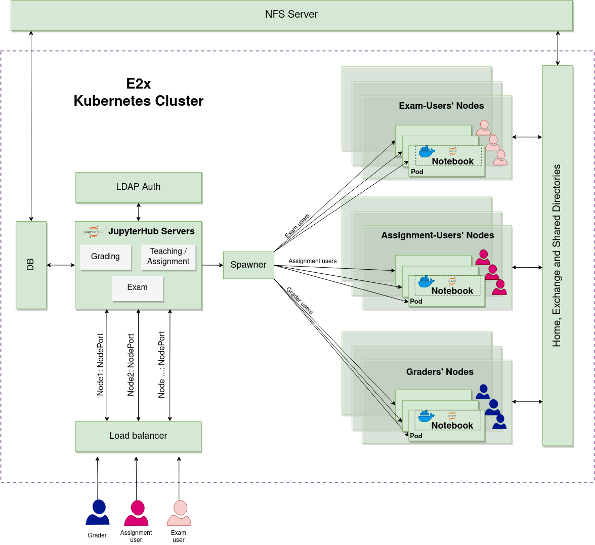

E2x JupyterHub
JupyterHub is a multi user hub that spawns, manages, and proxies multiple Jupyter Notebook servers. We use JupyterHub for some Master Autonomous Systems, Master Informatik, and Bachelor Informatik courses for both teaching and examination.
We deploy JupyterHub on Kubernetes cluster using using Zero-to-JupyterHub which provides a nice, step-by-step tutorial on how to install JupyterHub on Kubernetes on different cloud providers. Our Kubernetes (k8s) cluster is provisioned on FB02 OpenStack using Kubespray.
There are three servers running on e2x Kubernetes cluster:
The assignment server is used by graders and students for teaching purposes. The usage guidelines can be found in student’s guidelines and grader’s guidelines for students and graders respectively.
The exam server is used by students during exams. The server is only accessible from pool rooms, laptop pool and staff vpn. One time password is used as the JupyterHub authentication. The environment for exam is restricted using e2x view extension. Internal and external network communications are also blocked using Kubernetes Network Policy. For the sake of the originality of student’s work, the submissions are always hashed to make sure that they have not been tempered with.
Note
During Covid-19 pandemic, the exam server is open to public during examination period, since the exams are conducted at home.
The grading server is used by graders for grading exam submissions. The server uses LDAP authentication. The guidelines for the graders can be found here.
The whole system architecture is illustrated in the following figure:
Kubernetes cluster: e2x k8s cluster is an hihgly available (HA) cluster running 3 etcd nodes and 2 master nodes. This would ensure the cluster running if one etcd node is down.
Nodes: 1) Master nodes are dedicated nodes for apiserver, controller manager, scheduler and etcd; 2) Worker nodes are used for JupyterHub server, assignment user, and exam user container.
JupyterHub servers: the hub servers are deployed using Z2JH and are separated by a namespace on the cluster. Each server runs in its own container. We heavily customized jupyterhub_config in order to meet the requirements we need. Z2JH provides an extra config that we use to modify spawner. Our extra config can be found here.
Spawner: utilizes kubespawner, which enables JupyterHub to spawn a single user notebook on the worker nodes. Kubespawner spawns multiple single user notebook server with JupyterHub without requiring an extra layer such as ansible. Resource allocation, persistent volume mount (with NFS), security policy setting can also be done easily with kubespawner. We also modify the spawner in such a way that it can mount the corresponding user home directory, exchange and other personalized shared directories. The user information is stored in DB, which is nothing but a csv file containing the user information such as courses. With this information, we also generate a personalized profile list for each student, a profile which contains the courses he/she is registered to, resource allocation, image and personalized volume mount.
User’s notebook server: runs in its own container. Kubernetes provides an isolation of the user container among other user containers in the same namespace or different namespace. The specification of the container is generated by the spawner.
NFS server: runs on a separate instance on OpenStack. It is used to host and share db and home, exchange and shared directories.
Load balancer: Since the OpenStack does not have a load balancer service, we runs on a separate instance on OpenStack. One way to access the k8s cluster is to expose JupyterHub service via NodePort. With NodePort it will open the specified port on all k8s nodes. However, since the k8s nodes are only accessible within the cluster nodes and staff vpn, a load balancer has to be deployed and users can get access to the cluster via the load balancer.